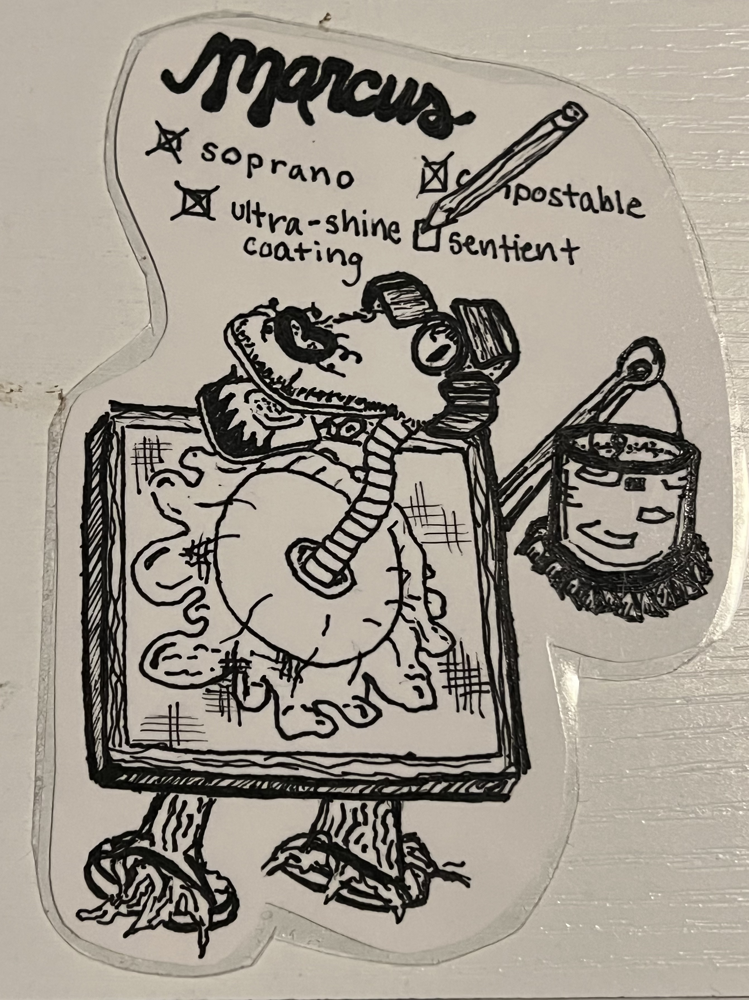
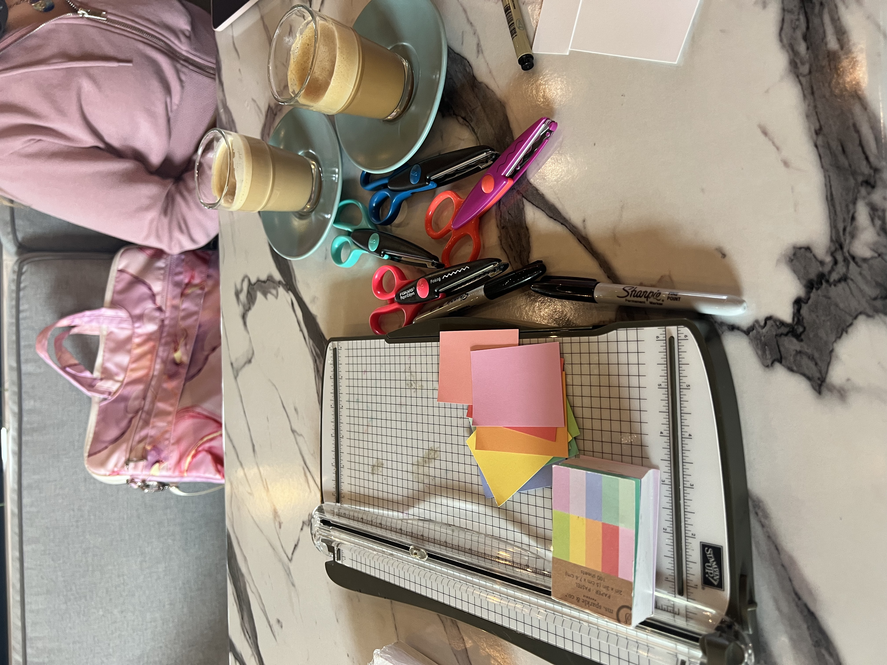
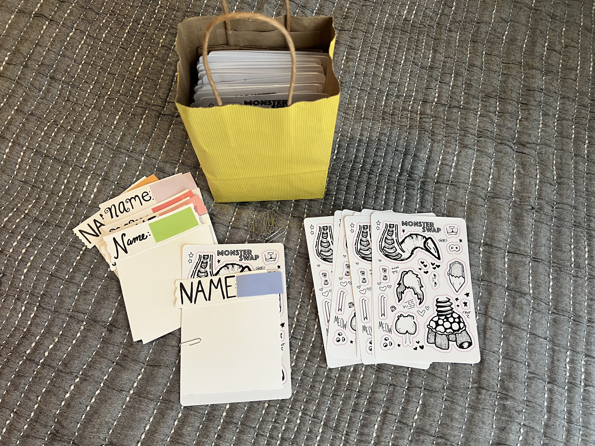

Monster Swap
Follow the evolution of Monster Swap from hand-drawn characters to physical games, convention giveaways, and
an
interactive web experience. At each stage, I adapted the project to a new medium and considered how design
choices could
make the experience more intuitive, engaging, and fun.
For its digital iteration, I built Monster Swap with Next.js, React, and Tailwind CSS, using the project as an
opportunity to expand my front-end development skills while bringing years of creative work into one
interactive
application

The setup

Monster Swap started with handmade monsters I scribbled on every blank surface. And truly? It started
with
my dad, who
would have us take turns drawing features of a creature on napkins while waiting for food at restaurants.
Over the years i’ve gathered a hoard of laminated monster drawings- from school notes, on airplanes, in
the
middle of the
night, or while watching tv; I was always drawing.
Monsters drawn over the years have been brought to life in powerpoint, party game, sticker, and now
digital form.
Creating Monster Swap was a way to harness my technical and creative skills together to show how far one
project can go.
Monster Swap was built in a Next.js App using React components and Tailwind CSS styling.
Powerpoint
For my powerpoint I roleplayed a captured scientist and structured the presentation around an ongoing narrative.
Party Game
Turning the concept into a group activity required me to make materials easy to access, consider timing for engagement, and design the experience around how people would actually interact with it.
Stickers
I adapted the monsters into mix-and-match sticker sets designed to be handed out at a convention, which meant thinking about visual clarity, physical presentation, and quick comprehension in a busy environment.
Website
As a website, Monster Swap introduced new challenges: creating intuitive interactions, responsive layouts, and clean visual styling.
Process
Powerpoint
My first debut of monsters was when in an imaginary worlds course presentation. It was a hit, and I was certain my monsters hadn’t made their last appearance. Last year, for a birthday, I had another chance- a party for sharing powerpoints on whatever topic you wish. It was time to go big and bold! I wanted to create something interactive, and settled on a mix and match build-your-monster activity.
Party Game

In order to create a group activity that could function well for a crowd watching the presentation, I had to consider how quickly I could distribute materials, how easily participants could make a decision, and how many monster pieces to have. For functionality, I opted to turn my drawings into stickers. I printed stickers at home and cut them out with an exacto blade, including a couple of extras for bodies and heads and making extras of varying sizes for eyes, mouths, and party hats. With players in a crowd, I kept pieces in clear bags to keep them sortable but still together. Big stickers had easy pull tabs and I started bags at different points in the crowd. To facilitate group fun, I added a spot for Name, Occupation, and two random bizarre categories on each monster paper. Players volunteered to share to the group. One of my favorite parts was when players flipped pieces sideways or upside down.Stickers

Moving forward, I couldn't get stickers out of my mind, nor the fun of mixing and matching my monsters that night. For an event, I decided to try and create an individual version of my activity. I landed on sticker sheets, along with a card to build and name it on. It was my first time ordering stickers! Since I was handing them out for free, I could compromise on over-the-top quality for a cost effective method. I was excited to be ordering from an at-home printer, who helped me through my digital design.

I learned how to use GIMP, and transferred my digital drawings onto a sheet; spaced, and with additional style. Handing out the stickers was cute and rewarding- I held a bag saying "adopt a monster - ask me". I was able to connect with fellow artists, gain a few little boons, and watch people walk away with a piece of my art.
Website
Still, then- the monster thoughts didn't stop. When I was sizing the pieces for my stickers, I stacked them on one canvas. It made me think, what if i made an online monster swap game? Starting from scratch, I built a website in a Next.js App using React components and Tailwind styling. I used GIMP to draw and edit images, and HTML5 canvas to facilitate image rendering.
Results
The powerpoint was a success. The party was filled with amazing monsters- see some above. The stickers were handed out, but there was an interesting trend. My bag had two sides "Free Stickers. Ask Me!" and "Adopt a Free Monster. Ask Me!" Overwhelmingly, people were more comfortable asking for free stickers. There was also certainly a human connection aspect- the more I made eye contact and engaged with those around me, the more comfortable others seemed to be approaching me. Sales are important (even when the gain is $0)! Although I haven't had much time to see the results of the website, I hope to advertise it well.
Reflections
The biggest lesson I learned was about connecting humans to products. Engagement and interest was garnered with advertisement and accessibility. Bringing your product to into the customers' comfort zone provides easy interaction.
If I were to do it again, I'd push to improve the stickers; wide margins made the stickers harder to layer. Looking forward, I expect to make improvements to the site. From feedback now, or with a formal user interview, I would assess the performance and make improvements to my products. I have been considering adding a ship-to-you sticker service, where I print and mail you your monster. While working on this project, I became newly invigorated to update my website, and see a lot of continued development there.